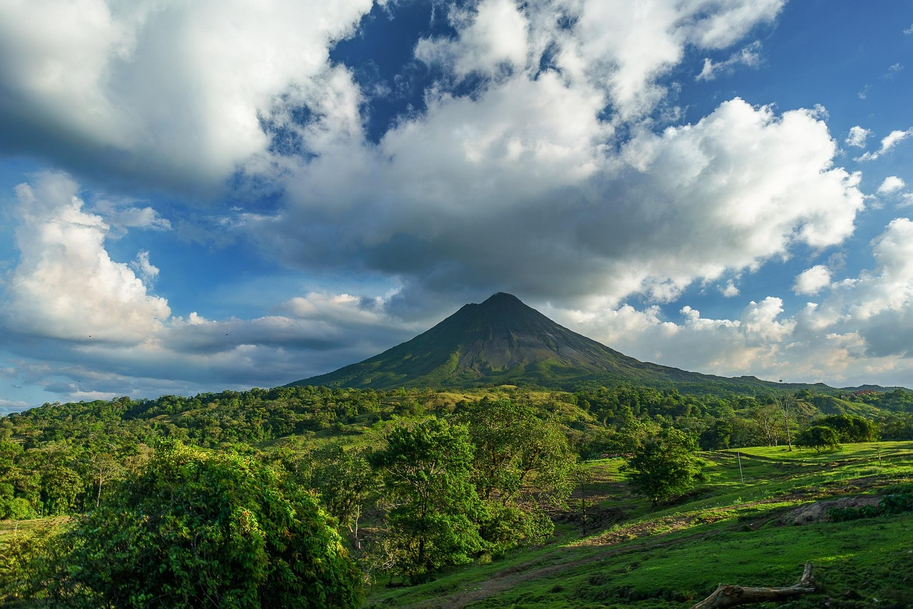
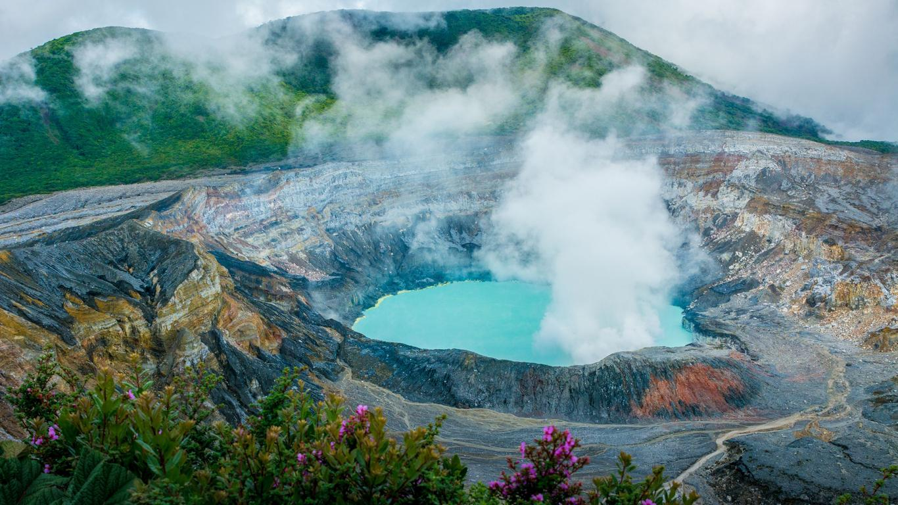
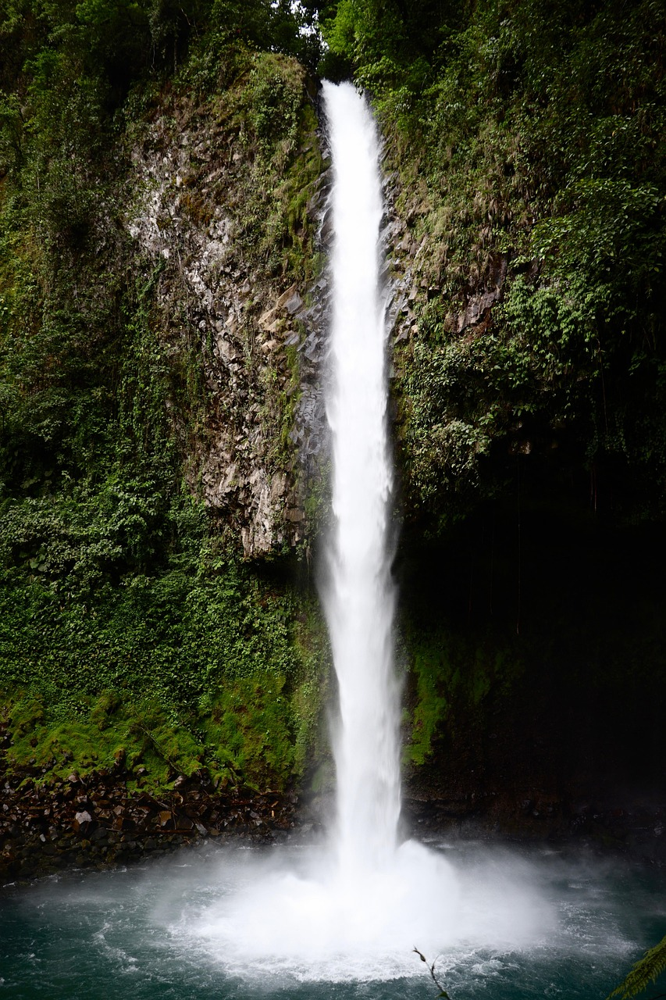
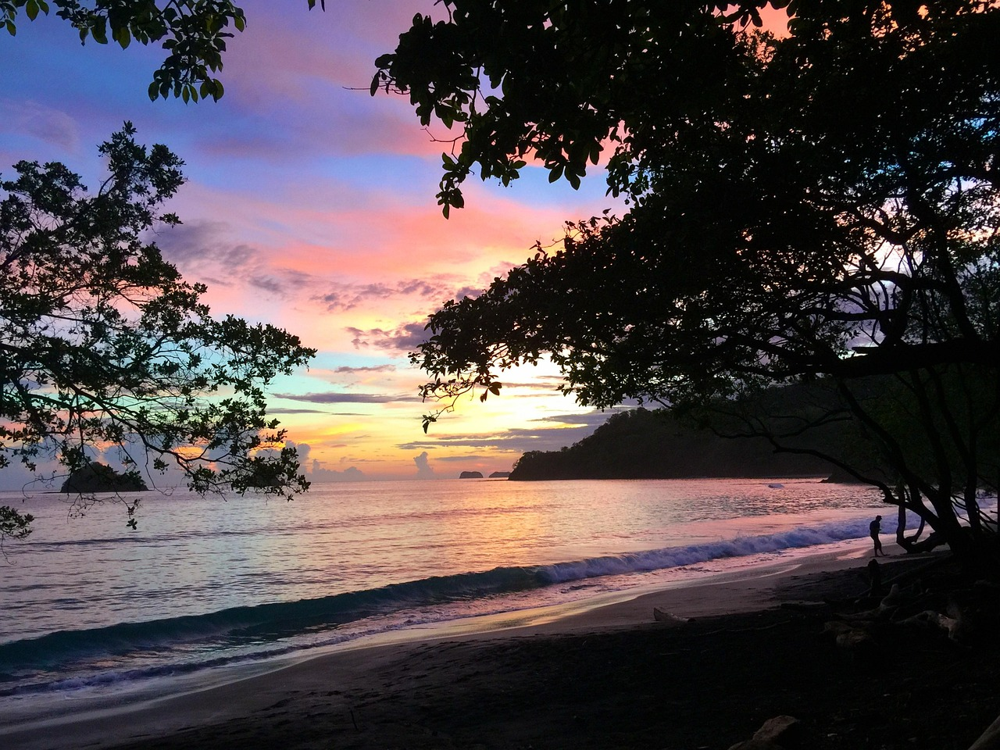
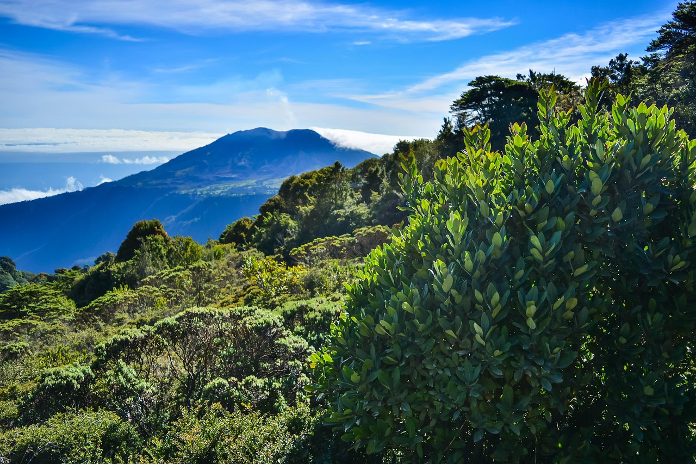

☰
Sobre nosotros
Contacto
Galería interactiva
Suscripción
Descubra Costa Rica
Votación de la comunidad
Testimonios
Recursos externos
Buscadao de Tours
    
Seleccione un recurso
Conversor dolares a colones
Trip Advisor
airbnb Costa Rica
Consejos de viaje
Conducir en Costa Rica